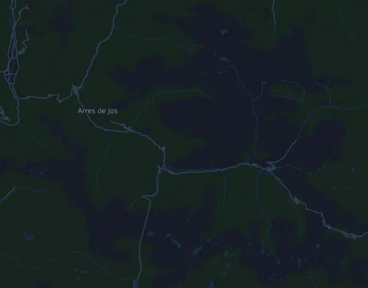

Val d'Aran by UTMB – Torn dera Val d'Aran (VDA) 163 km
- Distanse
- 159,7 km
- Høydemeter
- ↑ 10 559 m
- Høyeste punkt
- 2 551 moh.
- Underlag
- Terreng og sti
- Karakter
- Fjellpreget
- Start
- kl. 16:00
Høydeprofil
Forbered deg med Mila
Mila er en løpecoach i en app. Legger du et løp inn i planen din, planlegger coachen ukene fram til start etter formen din, og gir deg en tidsprognose og en plan for tempo, drikke og energi i løypa.

Rett økt. Rett dag.
Løypa

Om løypa
HOKA Val d'Aran by UTMB – Torn dera Val d'Aran (VDA) 163 km er et terrengløp på 159,7 km i Vielha, Spania. Løypa har 10 559 høydemeter oppover og 10 559 nedover, 66 m per km, og regnes dermed som fjellpreget. Høyeste punkt ligger 2 551 moh. og laveste 609 moh.
Den største stigningen starter ved km 0,0: 1 193 høydemeter på 7,3 km med 16,4 % i snitt, opp til 2 171 moh. Totalt har løypa 46 stigninger på minst 25 høydemeter; den siste starter ved km 146,9.
I Mila-appen beskriver coachen løypa i detalj på ditt språk og planlegger tempo og energi for den.
Stigninger
| Starter ved | Lengde | Høydemeter | Stigning | Topp (moh.) |
|---|---|---|---|---|
| km 0,0 | 7,3 km | 1 193 m | 16,4 % | 2 171 |
| km 7,5 | 570 m | 64 m | 11,2 % | 2 165 |
| km 10,1 | 1,8 km | 207 m | 11,4 % | 1 810 |
| km 13,8 | 1,2 km | 72 m | 6,1 % | 1 743 |
| km 15,4 | 250 m | 28 m | 11,4 % | 1 714 |
| km 19,7 | 1,3 km | 103 m | 7,7 % | 1 264 |
| km 21,1 | 1,1 km | 133 m | 11,9 % | 1 387 |
| km 22,3 | 720 m | 91 m | 12,7 % | 1 471 |
| km 23,9 | 4,6 km | 990 m | 21,3 % | 2 458 |
| km 30,2 | 610 m | 35 m | 5,8 % | 2 101 |
| km 32,1 | 1,2 km | 221 m | 17,8 % | 2 208 |
| km 33,8 | 1,1 km | 90 m | 8,2 % | 2 132 |
| km 35,1 | 430 m | 32 m | 7,5 % | 2 140 |
| km 36,0 | 310 m | 50 m | 16,2 % | 2 157 |
| km 37,5 | 50 m | 129 m | 277,3 % | 2 046 |
| km 40,9 | 1,1 km | 33 m | 2,9 % | 1 310 |
| km 42,4 | 510 m | 44 m | 8,7 % | 1 353 |
| km 44,4 | 460 m | 27 m | 5,9 % | 1 136 |
| km 51,9 | 970 m | 38 m | 3,9 % | 692 |
| km 53,4 | 720 m | 42 m | 5,8 % | 668 |
| km 54,6 | 320 m | 32 m | 10,0 % | 649 |
| km 55,3 | 180 m | 35 m | 19,5 % | 662 |
| km 55,5 | 1,8 km | 318 m | 17,9 % | 975 |
| km 57,9 | 290 m | 234 m | 80,3 % | 980 |
| km 59,5 | 2 km | 250 m | 12,7 % | 1 193 |
| km 63,2 | 1,1 km | 114 m | 10,3 % | 1 100 |
| km 64,6 | 1,2 km | 143 m | 12,0 % | 1 230 |
| km 65,8 | 3,1 km | 493 m | 15,7 % | 1 721 |
| km 69,0 | 140 m | 27 m | 19,7 % | 1 737 |
| km 69,1 | 3,8 km | 617 m | 16,3 % | 2 348 |
Før start
Starttider
- kl. 16:00
Kilde: valdaran.utmb.world, hentet 15. oktober 2026
Vanlige spørsmål
Når går Val d'Aran by UTMB – Torn dera Val d'Aran (VDA) 163 km?
Val d'Aran by UTMB – Torn dera Val d'Aran (VDA) 163 km går fredag 9. juli 2027. Sjekk dato og starttid hos arrangøren.
Når starter Val d'Aran by UTMB – Torn dera Val d'Aran (VDA) 163 km?
Ifølge arrangøren: kl. 16:00.
Hvor langt er Val d'Aran by UTMB – Torn dera Val d'Aran (VDA) 163 km, og hvor mange høydemeter er det?
Løpet er 159,7 km langt med 10 559 høydemeter oppover og 10 559 nedover. Høyeste punkt ligger 2 551 moh.
Hvordan er løypa i Val d'Aran by UTMB – Torn dera Val d'Aran (VDA) 163 km?
Løypa regnes som fjellpreget, med 66 høydemeter per km i snitt. Den har 46 stigninger på minst 25 høydemeter; den største starter ved km 0,0: 1 193 høydemeter på 7,3 km. Start og mål ligger på samme sted. Underlaget er terreng og sti.
Hvordan legger jeg opp farten i Val d'Aran by UTMB – Torn dera Val d'Aran (VDA) 163 km?
Sikt på en jevn innsats heller enn et jevnt tempo: la farten gå ned i motbakkene, hent den inn igjen når det flater ut, og hold igjen de første kilometerne. De største stigningene starter ved km 0,0, km 23,9, km 113,4 og km 146,9. I Mila får du en tempoplan for akkurat denne løypa etter din egen form.
Flere løp som dette
Flere løp i nærheten
- Trail Menorca Camí de Cavalls – TMCDC 185 km30. april 2027 · Ciutadella, Spania
- Tenerife Bluetrail 110k9. april 2027 · Playa de Los Cristianos, Spania
- Zurich Marató Barcelona 42,2 km14. mars 2027 · Barcelona, Spania
- Transgrancanaria Classic 125 km26. februar 2027 · Las Palmas de Gran Canaria, Spania
- Zurich Maratón de Sevilla 42,2 km21. februar 2027 · Sevilla, Spania
- Hyundai Mitja Marató Barcelona by Brooks 21 km14. februar 2027 · Barcelona, Spania
Forbered deg med Mila
Rett økt. Rett dag.
Opplysningene kommer fra løypefilen og arrangørens informasjon. Sjekk dato, starttider og regler hos arrangøren.
Mila er ikke tilknyttet, sponset av eller godkjent av arrangøren eller løpets sponsorer. Navn og varemerker tilhører sine eiere. Arrangør eller rettighetshaver? Be om endring eller fjerning